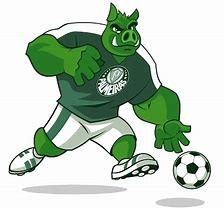

Mascote
O mascote do Palmeiras é o Porco Gobbato! 🐷💚
📖 A História do Mascote
Antigamente, os rivais do Palmeiras chamavam os palmeirenses de "porcos" de forma pejorativa. Isso começou em 1969, quando o São Paulo foi punido por escalar um jogador irregular e o Palmeiras foi beneficiado, se classificando para a final do Paulistão. Revoltada, a torcida são-paulina começou a gritar “porco!” nas arquibancadas para provocar os palmeirenses.
No começo, a torcida do Verdão rejeitou o apelido, mas com o tempo o Palmeiras abraçou a provocação e transformou o "Porco" em símbolo de orgulho! Em 1986, os jogadores Jorginho e Mirandinha comemoraram um gol gritando "Agora somos porco mesmo!", e a torcida adotou de vez o apelido.

Mascote aqui
Voltar